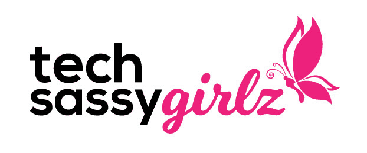

Once Upon A Time... Before I became a college student
|
During my junior year of high school, I was offered an internship from Tech Sassy Girlz for the duration of my spring break during Covid in their Pearls in Tech program. I was incredibly grateful and excited to learn to code even though I had no experience and barely knew what it was. As the internship began, I quickly began fascinated by the daily teachings twice a day by women who recently completed their degree in STEM. It opened my eyes for the first time to programming languages and ever since then I have been fascinated by coding. By the end, of the spring break week I had created a mockup of my very own first webpage.
|
 |
My Concentrations
As shown above, this very internship during high school has influenced while also lead me to where I am now. The very small introduction of HTML and CSS helped me figure out what I wanted to study in college. This also influenced the concentrations I picked for my major Information Technology which are "Data Mining" and "Web Development".
If you would like to learn more about HTML and CSS or just curious about coding languages then, I recommened you check out the link below.
Visit W3Schools!